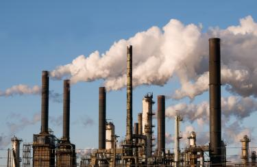
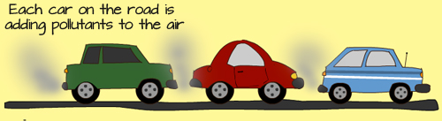

What causes air pollution?
Air pollution can result from both human and natural actions. Natural events that pollute the air include forest fires, volcanic eruptions, wind erosion, pollen dispersal, evaporation of organic compounds and natural radioactivity. Pollution from natural occurrences are not very often.
Human activities that result in air pollution include:
1. Emissions from industries and manufacturing activities:

Consider a typical manufacturing plant:
You will notice that there are long tubes (called chimneys) erected high into the air, with lots of smoke and fumes coming out of it. Waste incinerators, manufacturing industries and power plants emit high levels of carbon monoxide, organic compounds, and chemicals into the air. This happens almost everywhere that people live. Petroleum refineries also release lots of hydrocarbons into the air.
2. Burning Fossil Fuels:
After the industrial age, transportation has become a key part of our lives. Cars and heavy duty trucks, trains, shipping vessels and airplanes all burn lots of fossil fuels to work. Emissions from automobile engines contain both primary and secondary pollutants. This is a major cause of pollution, and one that is very difficult to manage. This is because humans rely heavily on vehicles and engines for transporting people, good and services.
Fumes from car exhauts contain dangerous gases such as carbon monoxide, oxides of nitrogen, hydrocarbons and particulates. On their own, they cause great harm to people who breath them. Additionally, they react with environmental gases to create further toxic gases.

3. Household and Farming Chemicals:
Crop dusting, fumigating homes, household cleaning products or painting supplies, over the counter insect/pest killers, fertilizer dust emit harmful chemicals into the air and cause pollution. In many case, when we use these chemicals at home or offices with no or little ventilation, we may fall ill if we breathe them.